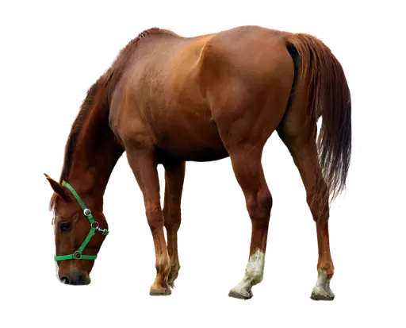
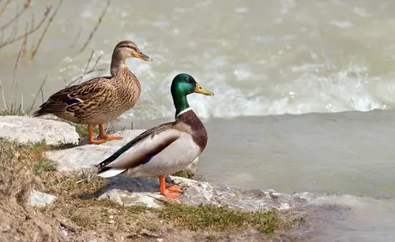
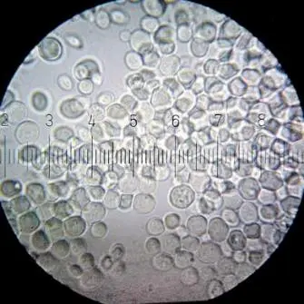
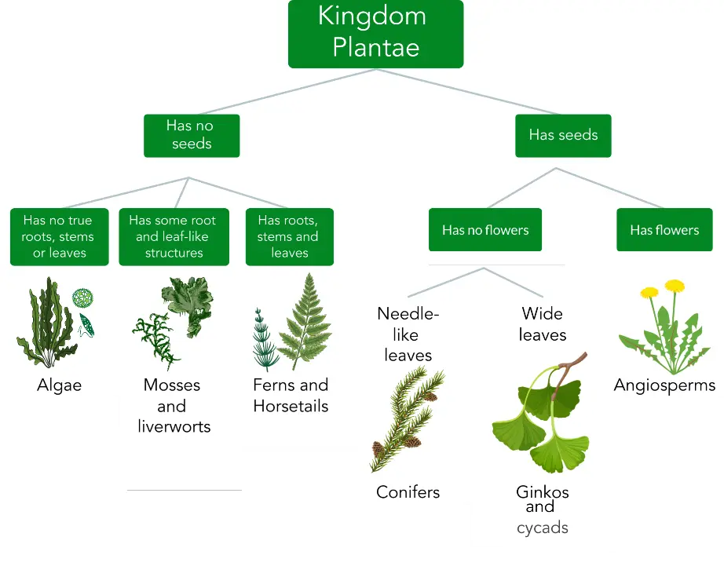
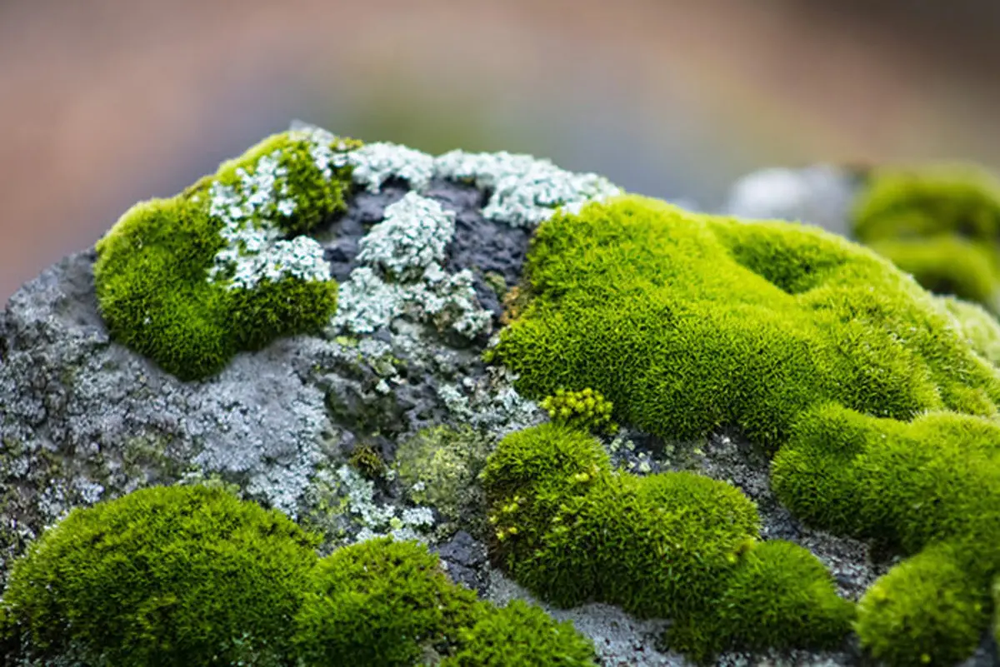
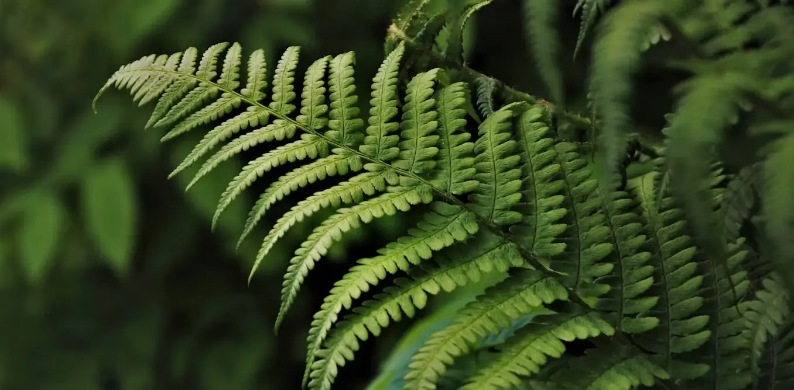
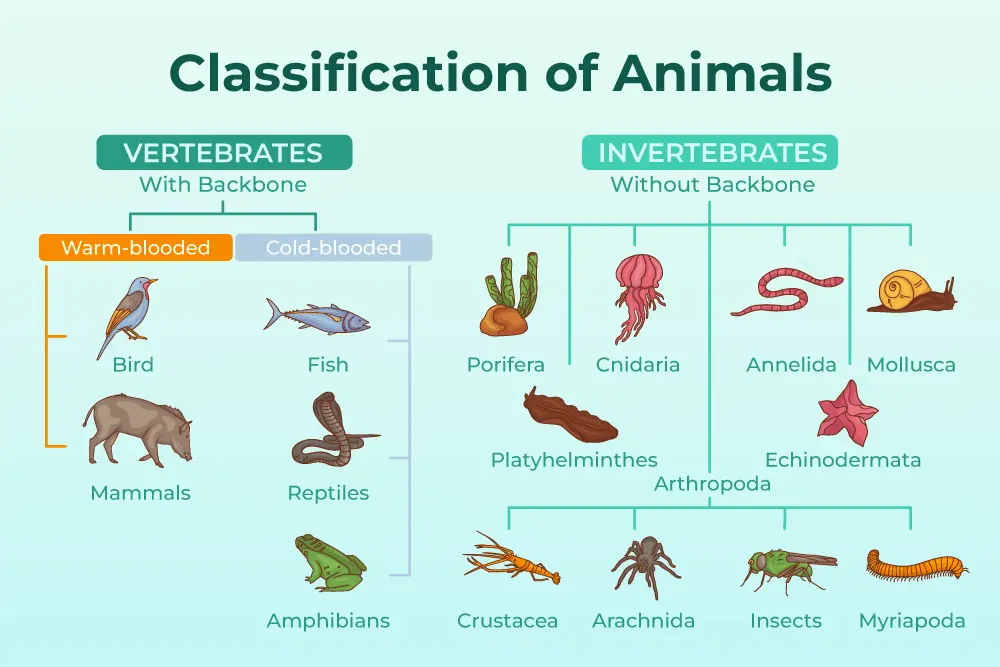
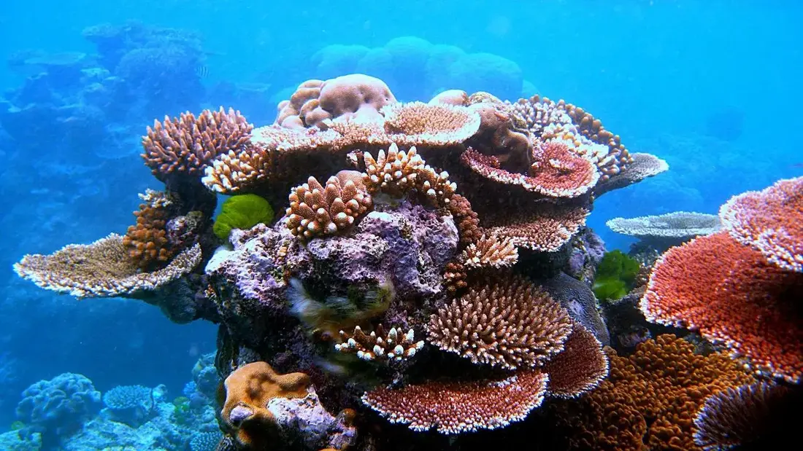
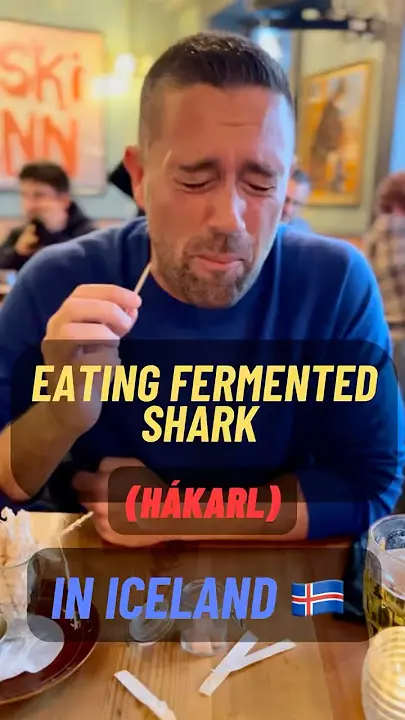
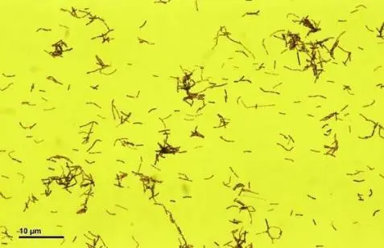

1.1understand how living organisms share the following characteristics: they require nutrition; they respire; they excrete their waste; they respond to their surroundings; they move; they control their internal conditions; they reproduce; they grow and develop
1.2describe the common features shown by eukaryotic organisms: plants, animals, fungi and protoctists
1.3describe the common features shown by prokaryotic organisms such as bacteria
1.4understand the term ‘pathogen’ and know that pathogens may include fungi, bacteria, protoctists and viruses
About the IGCSE Biology exam (paper, grades, topics)
Biology Paper 1B: 2 hours, 110 marks, a third of the Double Award (with Chemistry 1C and Physics 1P, also 2 hours each). Multiple-choice, short-answer, calculations and extended open-response questions; calculator allowed.
Assessment objectives: AO1 knowledge with understanding 38–42% · AO2 application, analysis and evaluation 38–42% · AO3 experimental skills, analysis and evaluation of data and methods 19–21%. Grades 9–1 (9 is the best).
Topics: 1 Nature and variety of living organisms · 2 Structures and functions in living organisms · 3 Reproduction and inheritance · 4 Ecology and the environment · 5 Use of biological resources.
1a Characteristics of living organisms 1.1
All living organisms, from simple bacteria to plants and animals, carry out the same eight life processes. Remember them as MRS C GREN:
MovementAn action that changes the position or place of the organism or part of it (plants move too, e.g. leaves turning to the light).
ReproductionMaking more organisms of the same kind.
SensitivityDetecting changes in the surroundings (stimuli) and responding to them.
ControlKeeping internal conditions, like temperature and water content, constant.
GrowthA permanent increase in size, and developing (becoming more complex).
RespirationChemical reactions in cells that release energy from nutrients such as glucose.
ExcretionGetting rid of waste made by the body’s reactions, e.g. carbon dioxide, urea.
NutritionTaking in or making food for energy and to build new cells.
Movement
An action that changes the position or place of the organism or part of it.

Animals move from place to placePlants move parts: shoots bend towards lightSome bacteria swim using flagella
Reproduction
Making more organisms of the same kind.

Ducks: a male and a female mate, then she lays eggsBacteria reproduce by splitting in twoFlowers make seeds
Sensitivity
Detecting changes in the surroundings (stimuli) and responding to them.
A shoot detects light and grows towards itYoung sunflowers turn to follow the sunAnimals detect stimuli with sense organs
Control
Keeping internal conditions, like temperature and water content, constant.
A sea otter keeps its body warm in cold waterBody temperature is kept at about 37 °C
Growth
A permanent increase in size, and developing (becoming more complex).
A bean seed grows into a plantTadpoles develop into frogsHumans grow from children to adults
Size increases with age
Respiration
Chemical reactions in cells that release energy from nutrients such as glucose.
Aerobic respiration in every cellMuscles respire to release energy for running

Yeast respire too
Excretion
Getting rid of waste made by the body’s own reactions.
Waste made by reactions is removedJellyfish lose waste into the water by diffusion
Nutrition
Taking in or making food for energy and to build new cells.
Plants make their own food: photosynthesisAnimals eat other organismsFungi digest food outside their bodies
Fire grows, moves and uses oxygen. Is it alive?A mule can’t reproduce. Is it alive?Worker bees don’t reproduce. Are they alive?A chrysalis doesn’t move or eat. Is it alive?A dry seed does nothing for months. Is it alive?A fetus can’t feed itself. Is it alive?
Answers to discuss
Fire isn’t alive: it isn’t made of cells and doesn’t do all eight processes (no reproduction of offspring, no excretion, no sensitivity). Mules and worker bees are alive: each one is made of cells and does the other processes; reproduction is a process of the kind of organism, not every single individual. A chrysalis, a seed and a fetus are all alive: their cells respire all the time, and they are growing and developing.
There are over 2000 types of jellyfish around the world. Jellyfish swim by rhythmic pulsations of the umbrella. The tentacles on a jellyfish are covered with millions of stinging cells. Jellyfish usually feed on small fish that get caught in their tentacles or sometimes even other jellyfish.
Jellyfish take oxygen into their cells directly from the water around them. Jellyfish don’t actually have brains but they do have something called a nerve net which can coordinate responses. Most jellyfish release sperm or eggs directly into the water around them. Jellyfish have no blood, bones or hearts. But some of them can do incredible things like glow in the dark.
Jellyfish are some of the oldest living creatures on Earth and have probably been around on the planet for over 600 million years. Jellyfish numbers are increasing as they are one of the few living organisms that are thriving with warmer, more acidic oceans.
Q1. Suggest and explain 3 pieces of evidence from the passage that show that jellyfish are a type of living organism.[3]
Show mark scheme
Any 3 from: they swim, which is movement; they feed on small fish, which is nutrition; they make sperm and eggs, used in reproduction; they take oxygen from the water for respiration; they can coordinate responses, which is control / sensitivity.
Q2. Suggest how jellyfish carry out excretion.[1]
Show mark scheme
They release waste into the water by diffusion.
Q3. Some jellyfish can clone themselves to make identical copies. Suggest how this also shows they are living organisms.[1]
Show mark scheme
It is a type of reproduction (asexual).
1b Variety of living organisms 1.21.3
All living organisms can be classified into groups based on their features. In Edexcel IGCSE Biology there are 5 kingdoms: plants, animals, fungi, protoctists and bacteria. Viruses are non-living, so they are classified separately.
Eukaryotic: cells have a nucleus: plants, animals, fungi and protoctists.
Prokaryotic: cells have no nucleus: bacteria.
The variety of lifeMicroorganisms under the microscope
Explore the kingdoms
Choose a group to see its cells and features. The drawings change each time, so you get used to cells looking a little different.
All the groups at a glance
Plants
Animals
Fungi
Protoctists
Bacteria
Cells
Multicellular
Multicellular
Mostly hyphae; some single-celled
Mostly single-celled
Single-celled
Nucleus
Yes
Yes
Yes (many in each hypha)
Yes
No: circular chromosome + plasmids
Cell wall
Cellulose
None
Chitin
Some
Yes (peptidoglycan)
Chloroplasts
Yes
No
No
Some (e.g. Chlorella)
No (a few photosynthesise)
Feeding
Photosynthesis
Eat other organisms
Saprotrophic
Varies
Mostly feed on other organisms
Carbohydrate store
Starch / sucrose
Glycogen
Glycogen
–
–
Examples
Maize, peas, beans
Humans, housefly, mosquito
Mucor, yeast
Amoeba, Chlorella, Plasmodium
Lactobacillus, Pneumococcus
Plants 1.2
They are multicellular.
Autotrophic: make their own food by photosynthesis.
Generally unable to move from one place to another.
They do not have nervous coordination.
Cells have cellulose cell walls and chloroplasts containing chlorophyll.
Store carbohydrate as starch or sucrose.
Examples: flowering plants such as a cereal (maize) and a herbaceous legume (peas or beans).

The plant kingdom: algae, mosses and liverworts, ferns, conifers, flowering plants
Non-flowering plants
Mosses, liverworts and ferns have no flowers or seeds: they reproduce with spores. Conifers have no flowers but make seeds in cones. Click a photo to see it bigger.
Moss

Moss (grey crust: lichen)Moss and liverwort

FernsConifers: seeds in conesConifer forestRedwood: a giant conifer
Flowering plants (angiosperms)
The biggest group: they have flowers and make seeds inside fruits. Most trees, grasses, crops and garden flowers are flowering plants. The exam examples are a cereal (maize) and a herbaceous legume (peas or beans).
Heterotrophic: get nutrition by feeding on other organisms.
Capable of movement from one place to another.
Usually have nervous coordination.
No cell wall and no chloroplasts, so they do not photosynthesise.
Often store carbohydrate as glycogen.
Examples: mammals (humans) and insects (housefly, mosquito).

Classification of animals: vertebrates and invertebrates

Corals are animals (invertebrates)
A snail
Spotlight: the Greenland shark
The Greenland shark lives in the cold, deep water of the North Atlantic and Arctic Oceans. It grows about 1 cm a year and can live for several hundred years, longer than any other known vertebrate. Many carry a parasite attached to their eyes. In Iceland its meat is fermented and dried to make hákarl, because the fresh meat is poisonous.
Greenland sharkGreenland shark on the sea floorWhere Greenland sharks are foundHow deep they liveParasite on the eyeA caught Greenland sharkGreenland shark food webHákarl dryingEating fermented shark

Eating fermented shark in Iceland
Fungi 1.2
Can be multicellular or single-celled (yeast).
Cell walls made of chitin.
Body usually a network of fibres called a mycelium, made of hyphae which have many nuclei.
Feed by saprotrophic nutrition: they secrete digestive enzymes onto food (extracellular digestion) and absorb the products.
The variety of protoctistsDiatoms, dinoflagellates, radiolarians and foraminiferaGreen algae in a pond
Bacteria 1.3
Microscopic, single-celled, with no nucleus (prokaryotic).
Have a cell wall (made of peptidoglycan), cell membrane and cytoplasm.
Have one circular chromosome of DNA.
Some contain plasmids (small loops of DNA).
Some have a capsule or slime layer (extra protection, e.g. against drying out or toxins).
Some species have flagella for movement.
Most feed off other living or dead organisms; some can photosynthesise.

Lactobacillus bulgaricus, used to make yoghurt from milk">Rod-shaped: Lactobacillus bulgaricus, used to make yoghurt from milkSpherical: Pneumococcus, causes pneumonia
Both: By Doc. RNDr. Josef Reischig, CSc., CC BY-SA 3.0 · source, source 2
E. coli cell. The two-membrane cell wall is green, with a network of peptidoglycan between the membranes. The DNA forms a loose “nucleoid” (yellow); ribosomes are reddish purple.">A cross-section through an E. coli cell. The two-membrane cell wall is green, with a network of peptidoglycan between the membranes. The DNA forms a loose “nucleoid” (yellow); ribosomes are reddish purple.Close-up of the same painting
HIV (the large red sphere) under attack by the immune system: small Y-shaped antibodies are binding to its surfaceA bacteriophage (red) has injected its DNA into an E. coli cell, destroying the cell’s DNA (purple) and forcing it to make new viruses. Then the cell bursts, releasing hundreds of new phages.
Jellyfish swim by rhythmic pulsations of the umbrella … usually feed on small fish … take oxygen into their cells directly from the water … have a nerve net which can coordinate responses … release sperm or eggs into the water.
Give 3 pieces of evidence that jellyfish are living.
swim → movement · feed → nutrition · sperm and eggs → reproduction · oxygen → respiration · nerve net → control
Jellyfish: excretion and cloning
How do jellyfish carry out excretion? [1]
They release it into the water by diffusion
Some clone themselves. How does this show they are living? [1]
It is a type of reproduction
Topic 1b
Variety of living organisms
Classification
Eukaryotic or prokaryotic?
Eukaryotic
has a nucleus
plants · animals · fungi · protoctists
Prokaryotic
no nucleus
bacteria
Microorganisms
Plants
Multicellular
Photosynthesise: make their own food
Cellulose cell walls and chloroplasts
Store starch or sucrose
Can’t move from place to place
e.g. maize (a cereal), peas, beans
Non-flowering plants
No flowers. Mosses and ferns make spores; conifers make seeds in cones.
MossMoss (grey crust: lichen)Moss and liverwortFernsConifers: seeds in conesConifer forestRedwood: a giant conifer
Flowering plants (angiosperms)
Flowers → seeds inside fruits. The biggest group of plants.


 InteractiveAn introduction to flowerslearn.genetics.utah.edu ↗
InteractiveAn introduction to flowerslearn.genetics.utah.edu ↗


 InteractiveSPUN Underground Atlas: map of fungal networksspun.earth ↗
InteractiveSPUN Underground Atlas: map of fungal networksspun.earth ↗